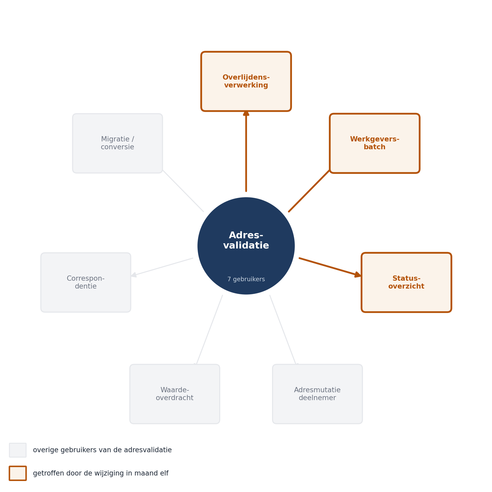
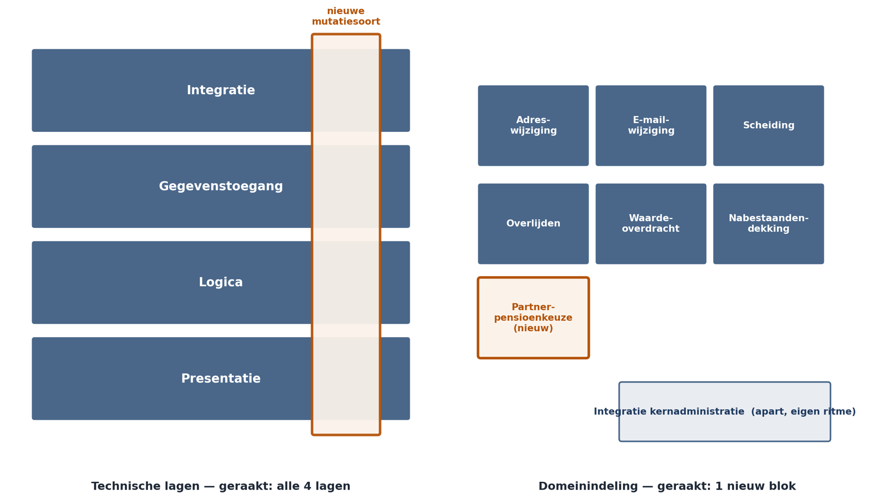

Deel 3 — Ontwerpprincipes
Slidedeck · 33 slides · dagdeel van 4 uur inclusief opdrachten
Cursus Softwarearchitectuur · Niveau 1 (CPSA-F) · Deel 3 van 10
Slide 1 — titel
Ontwerpprincipes Niveau 1 · Deel 3 — Koppeling, cohesie, information hiding Sluit bevinding B3
Slide 2 — bullets
Terugblik deel 2
- Kwaliteitsscenario’s in zes delen; percentielen, geen gemiddelden
- Kwaliteitsboom: belang × risico → vier architectuurdrijvers
- Trade-off in vier delen, inclusief herzieningsgrens
- Vandaag: hoe vertaalt QS-3 zich naar structuur?
Slide 3 — sectie
Maand elf
Slide 4 — bullets
Het verzoek Bij een adreswijziging naar het buitenland volgt voortaan een extra controle op verdragsstatus voor de loonheffing. Geschat: enkele dagen.
Slide 5 — bullets
Het resultaat: vijf weken, drie gebroken functies
- Overlijdensbericht — validatie werd hergebruikt voor het correspondentieadres van de nabestaande
- Werkgeversbatch — viel om bij ongeldige postcodes; foutgedrag was aangescherpt in een gedeelde tabel
- Statusoverzicht — lege datums, want het las een veld dat de validatie intern vulde Geen van drieën heeft iets met buitenlandse adressen te maken.
Slide 6 — figuur

Slide 7 — statement
De vraag van vandaag: Hoe trekt u grenzen zodat een wijziging blijft waar hij hoort?
Slide 8 — sectie
Koppeling
Slide 9 — statement
Koppeling is geen eigenschap van uw diagram. Het is een eigenschap van uw werkweek: wijzigt u A en moet B mee?
Slide 10 — tabel
Soorten koppeling — van hanteerbaar naar giftig
| Soort | In de casus |
|---|---|
| Data | postcode + huisnummer doorgeven |
| Stempel | volledig deelnemersobject doorgeven |
| Besturing | valideer(adres, strikt: true) |
| Gemeenschappelijk | gedeelde configuratietabel |
| Inhoud | statusoverzicht leest intern veld |
Slide 11 — bullets
Twee richtingen
- Efferente (uitgaand) — hoeveel hangt dit component van anderen af? Hoog = kwetsbaar
- Afferente (inkomend) — hoeveel hangt van dit component af? Hoog = star
- Adresvalidatie: zeven inkomende gebruikers, met verschillende wensen
Slide 12 — statement
Hergebruik verhoogt afferente koppeling. Afferente koppeling verlaagt wijzigbaarheid. Hergebruik is niet gratis.
Slide 13 — bullets
De twee koppelingen die u niet ziet
- Temporeel — de nachtelijke export moest klaar zijn vóór de ochtendbatch. Stond nergens. Volume groeide. Batch brak
- Semantisch — beide componenten namen aan dat een lege einddatum “loopt nog” betekent
- Peildatum, ingangsdatum, verwerkingsdatum: lijken op elkaar, zijn niet hetzelfde
Slide 14 — opdracht
Opdracht 3.1 — Soorten koppeling herkennen Acht situaties classificeren. Individueel, 15 minuten. Vervolgvraag: welke staan er in het gegenereerde afhankelijkhedenoverzicht — en welke niet?
Slide 15 — sectie
Cohesie
Slide 16 — tabel
Van zwak naar sterk
| Soort | Grondslag |
|---|---|
| Toevallig | niets (Utils, Common) |
| Logisch | lijkt op elkaar ← Mutatie 1.0 |
| Temporeel | gebeurt tegelijk |
| Procedureel | zelfde volgorde |
| Communicatief | zelfde gegevens |
| Functioneel | één taak |
Slide 17 — statement
“Validatie hoort bij validatie.” Klinkt goed. Is logische cohesie. Kostte vijf weken.
Slide 18 — bullets
De toets Veranderen deze onderdelen om dezelfde reden, op verzoek van dezelfde partij?
- Adresvalidatie deelnemersmutatie → verandert bij correspondentiebeleid
- Adresvalidatie werkgeversbatch → verandert bij aanleverformaat Ze lijken op elkaar en horen niet bij elkaar.
Slide 19 — sectie
Waarom dit geen doelen zijn
Slide 20 — bullets
Drie nuances
- Koppeling nul bestaat niet — componenten die niets van elkaar weten, doen niets samen
- Lage koppeling is te koop; de prijs is complexiteit. Veertig indirecties is niet wijzigbaar maar ondoorgrondelijk
- Wijzigbaarheid is altijd wijzigbaarheid ergens
Slide 21 — statement
Ontwerpprincipes zonder kwaliteitsscenario zijn smaak. QS-3 vertelt u waarlangs u moet snijden.
Slide 22 — sectie
Information hiding
Slide 23 — bullets
Parnas, 1972 Een component verbergt een beslissing die waarschijnlijk gaat veranderen.
- Niet: “maak velden privé”
- Wel: welke beslissing zit hierin, en wie mag er last van krijgen als zij wijzigt?
- Contract = wat we beloven · implementatie = hoe we het waarmaken
Slide 24 — tabel
De integratie met de kernadministratie
| Verbergen | Beloven |
|---|---|
| SOAP | uiteindelijk precies één keer doorgegeven |
| max. 20/sec | aanbieder hoort wanneer het gelukt is |
| hoofdlettereis | niets gaat verloren bij uitval |
| 3 herpogingen | vastgelopen mutaties worden zichtbaar |
Slide 25 — bullets
Twee klassieke fouten
- Het lekkende contract — een SOAP-foutcode doorgeven; zodra één aanroeper erop reageert, ligt het protocol vast
- De abstractie zonder beslissing — een interface om een interface. Toets: welke verandering wordt hierdoor goedkoper?
Slide 26 — opdracht
Opdracht 3.4 — Het contract van de integratiecomponent Verbergen / beloven, maximaal zes bewerkingen, dan de lektest. Duo’s, 25 minuten.
Slide 27 — sectie
Waarlangs snijdt u?
Slide 28 — tabel
Drie concurrerende criteria
| Criterium | Goed wanneer | Slecht wanneer |
|---|---|---|
| Technische laag | klein systeem | functionele wijzigingen |
| Domein | wijzigingen komen per functie binnen | veel gedeelde logica |
| Verandersnelheid | uiteenlopende ritmes | vraagt discipline |
Slide 29 — figuur

Slide 30 — opdracht
Opdracht 3.3 — Waarlangs snijdt u? Twee indelingen tekenen, drie wijzigingen doorrekenen, geraakte componenten tellen. Groepen van vier, 40 minuten. Verantwoord uw keuze tegen uw vier drijvers — niet tegen uw voorkeur.
Slide 31 — sectie
Conceptual integrity
Slide 32 — bullets
Het systeem werkt overal op dezelfde manier
- Dezelfde problemen, dezelfde oplossing; dezelfde begrippen, dezelfde betekenis
- In Mutatie 1.0: twee validatiemanieren, drie foutstijlen, “dossier” en “zaak” door elkaar
- Brooks: liever één samenhangend ontwerp mét gebreken dan losse goede ideeën
Slide 33 — statement
Koppeling en cohesie kan een team lokaal bewaken. Consistentie tussen componenten niet. Conceptual integrity is de eigenschap die het bestaan van een architect rechtvaardigt.
Slide 34 — bullets
De klassieke principes — en hun grenzen
- SRP — bruikbaar, als “reden om te veranderen, gezien vanuit één belanghebbende”
- Open/Closed — dat ís QS-3. Gevaarlijk als doel op zich
- DRY — gaat over dubbele kennis, niet dubbele tekst
- YAGNI — geldt voor wat goedkoop terug te draaien is, en niet voor de rest
Slide 35 — statement
Duplicatie is goedkoper dan de verkeerde abstractie. Duplicatie kost schrijfwerk. Een verkeerde abstractie kost maanden.
Slide 36 — bullets
Terug naar B3 — en huiswerk
- Cohesie op verandering, information hiding op de validatie, indeling langs de mutatiesoort, begrippenlijst tegen semantische koppeling
- Wijzigingen worden niet gratis — ze worden voorspelbaar en begrensd
- 3.6 duurste én goedkoopste wijziging in uw eigen systeem · 3.7 capstonedossier
- Deel 4: architectuurstijlen I — lagen, hexagonaal, pipes & filters
Ductus B.V. · Cursus Softwarearchitectuur · Niveau 1, deel 3 · Slidedeck